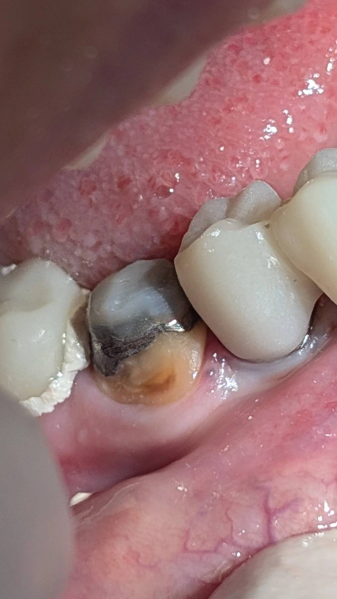

بدون استاپ صحیح خلفی رستوریشنها و روکشهای دندانهای قدامی محکوم به شکست هستند و همیشه می بایست قبل از اقدام برای باز سازی دندانهای قدام از وجود استاپ مناسب خلفی اطمینان حاصل کرد و الا تماس دندانهای قدامی بدون حمایت دندانهای خلفی ،باعث وارد آمدن نیروهای مایل به دندانهای قدامی میشود که این مساله احتمال آسیب و از بین رفتن دندانهای قدامی درمان شده را بالا میبرد
در بیماری که عکسش گذاشته شده در حال بازسازی وسیع دو فک بودیم در جلسه ی قبل همه ی پست کورها سمان شدند و دندانها اسکن شد تا این جلسه روکشهای موقت تحویل بیمار شوند
با سمان روکشهای موقت هم فانکشن و هم زیبایی به بیمار برمی گردد و هم ساپورت دندانهای خلفی فشار را از روی دندانهای قدام برمیدارد.
اما نکته اینجا بود که در وضعیت موجود در جلسه ی قبل که همه ی دندانها پست و کور بودندو نبود استاپ خلفی حتی به شکل موقت،تماس سنگین روی دندان و پست و کورهای قدامی بود و احتمال شکست این دندانها در فاصله ی آماده شدن روکشهای موقت زیاد بود
برای جلوگیری از این مساله به شکل موقت روی دندانهای خلفی منتخب در VD مناسب کمی کامپوزیت باند شد تا در فاصله زمانی آماده شدن روکش های موقت به دندانهای قدامی فشار وارد نشود و از آنها محافظت شود
برای باند کامپوزیت به کور فلزی از روش باند به فلز که قبلا در پادکستها توضیح داده شده استفاده شد